SECDATA, VAL1, VAL2, VAL3, VAL4, VAL5, VAL6, VAL7, VAL8, VAL9, VAL10, VAL11, VAL12
Describes the geometry of a section.
-
VAL1,VAL2,VAL3, . . . ,VAL12 Values, such as thickness or the length of a side or the numbers of cells along the width, that describe the geometry of a section. The terms
VAL1,VAL2, etc. are specialized for each type of cross-section.
Notes
The SECDATA command defines the data describing the geometry of a section. The command is divided into these section types: Beams, Links, Pipes, Axisymmetric, Taper, Shells, Pretension, Joints, Reinforcing, and Contact.
The data input on the SECDATA command is interpreted based on the most recently issued SECTYPE command. The data required is determined by the section type and subtype, and is different for each one.

Beams
Type: BEAM
Beam sections are referenced by BEAM188 and BEAM189 elements. Not all SECOFFSET location values are valid for each subtype.
|
Type: BEAM, Subtype: RECT
|
Type: BEAM, Subtype: QUAD
Degeneration to triangle is permitted by specifying the same coordinates for cells along an edge. | ||||||||||||||||||||||
|
Type: BEAM, Subtype: CSOLID
|
Type: BEAM, Subtype: CTUBE
This subtype is similar to type PIPE. However, elements using PIPE account for internal or external pressures, whereas elements using CTUBE do not. | ||||||||||||||||||||||
|
Type: BEAM, Subtype: CHAN
|
Type: BEAM, Subtype: I
| ||||||||||||||||||||||
|
Type: BEAM, Subtype: Z
|
Type: BEAM, Subtype: L
If | ||||||||||||||||||||||
|
Type: BEAM, Subtype: T
If |
Type: BEAM, Subtype: HATS
| ||||||||||||||||||||||
|
Type: BEAM, Subtype: HREC
|
Type: BEAM, Subtype: ASEC
SECPLOT cannot display an ASEC plot. | ||||||||||||||||||||||
|
Type: BEAM, Subtype: MESH
|


Links
Type: LINK
Link sections are referenced by the LINK180 element.
| Data to provide in the value fields: |
VAL1 = Area |
Pipes
Type: PIPE
Pipe sections are referenced by the PIPE288, PIPE289, and ELBOW290 elements.
Data to provide in the value fields: Do,Tw,Nc,Ss,Nt,Mint,Mins,Tinswhere Do= Outside diameter of pipe. Use a constant value for a circular pipe and an array for a noncircular pipe. (Noncircular pipe sections are referenced by the ELBOW290 element only. See Defining a Noncircular Pipe in the Structural Analysis Guide.)Tw= Wall thickness (defaults toDo/ 2, or “solid” pipe).Nc= Number of cells around the circumference (8
Nc120, where a greater value improves accuracy slightly; default = 8).
Ss= Section number of the shell representing the pipe wall. Valid with ELBOW290 only. (Total thickness of the section is scaled toTw. The program considers the innermost layer inside of the pipe to be the first layer.)Nt= Number of cells through the pipe wall. Valid values are 1 (default), 3, 5, 7, and 9. Cells are graded such that they are thinner on the inner and outer surfaces. Valid with PIPE288 and PIPE289 only.Mint= Material number of fluid inside of the pipe. The default value is 0 (no fluid). This value is used to input the density of the internal fluid. The fluid inside the pipe element is ignored unless the free surface in a global X-Y plane is added as face 3 (SFE) and is high enough to include at least one end node of the element.Mins= Material number of material external to the pipe (such as insulation or armoring). The default value is 0 (no external material). This value is used to input the density of the external material. (External material adds mass and increases hydraulic diameter, but does not add to stiffness.)Tins= Thickness of material external to the pipe, such as insulation. The default value is 0 (no external material).
The accuracy of the ovalization value (OVAL) output by ELBOW290 (Structural Elbow form only)
improves as the specified number of cells around the circumference
(N
c
) is increased.
External material (M
ins
) adds mass and increases hydraulic
diameter, but does not add to stiffness.
Taper
Type: TAPER
Tapered sections are referenced by BEAM188, BEAM189 and ELBOW290 elements. After specifying the tapered section type (SECTYPE,,TAPER), issue separate SECDATA commands to define each end of the tapered beam or pipe.
| Data to provide in the value fields: |
Sec_IDn, XLOC, YLOC, ZLOC
|
where: Sec_IDn= Previously defined beam or pipe section at ends 1 and 2.XLOC,YLOC,ZLOC= The location of Sec_IDn in the global Cartesian coordinate system.
For more information about tapered beams and pipes, including assumptions and example command input, see Defining a Tapered Beam or Pipe in the Structural Analysis Guide.
General Axisymmetric
Type: AXIS
General axisymmetric sections are referenced by the SURF159, SOLID272, and SOLID273 elements. Use this command to locate the axisymmetric axis.
| Data to provide in the value fields: |
| Pattern 1 (two points): |
1, X1, Y1, Z1, X2, Y2, Z2 |
where X1, Y1, Z1, X2, Y2, Z2 are global Cartesian
coordinates. |
| Pattern 2 (coordinate system number plus axis [1 = x, 2 = y, 3 = z] ): |
2, csys, axis
|
where csys is a Cartesian coordinate
system. |
| Pattern 3 (origin plus direction): |
3, XO, YO, ZO, xdir, ydir, zdir
|
where XO, YO, ZO
are global Cartesian
coordinates and xdir, ydir, and zdir are direction cosines. |
Shells
Type: SHELL
Shell sections are referenced by the SHELL131, SHELL132, SHELL181, SOLID185 Layered Solid, SOLID186 Layered Solid, SOLSH190, SHELL208, SHELL209, SOLID278 Layered Solid, SOLID279 Layered Solid, and SHELL281 elements.
| Data to provide in the value fields: |
TK, MAT, THETA, NUMPT, LayerName
|
| where |
TK = Thickness of shell layer.
Zero thickness (not valid for SHELL131 and SHELL132) indicates a dropped layer. The sum of all
layer thicknesses must be greater than zero. The total thickness
can be tapered via the SECFUNCTION command. |
MAT = Material ID for layer (any
current-technology material model is available for SHELL181, SOLID185 Layered Solid, SOLID186 Layered Solid, SOLSH190, SHELL208, SHELL209, SOLID278 Layered Solid and SOLID279 Layered Solid
[including
UserMat
], and SHELL281). MAT is required for a composite (multi-layered) laminate. For a homogeneous
(single-layered) shell, the default is the MAT command
setting. Use the TREF and/or the MP, REFT commands to address multiple reference temperatures. |
THETA = Angle (in degrees) of layer
element coordinate system with respect to element coordinate system
(ESYS). |
NUMPT = Number of integration points
in layer. The GUI permits 1, 3, 5, 7, or 9 points (default = 3). However
a higher odd number may be specified in the command. The integration
rule used is Simpson's Rule. (NUMPT is
not used by SHELL131 and SHELL132.) |
Pretension
Type: PRETENSION
Pretension sections are referenced by the PRETS179 element.
| Data to provide in the value fields: |
node, nx, ny, nz
|
| where |
node = Pretension node number. |
nx = Orientation in global Cartesian
x direction. |
ny = Orientation in global Cartesian
y direction. |
nz = Orientation in global Cartesian
z direction. |
The following usage is typical:
| SECTYPE, 1, PRETENSION |
| SECDATA, 13184, 0.000, 0.000, 1.000 |
| SECMODIF, 1, NAME, example |
| SLOAD, 1, PL01, TINY, FORC, 100.00 , 1, 2 |
The PRETENSION section options of SECTYPE and SECDATA are documented mainly
to aid in the understanding of data written by CDWRITE. ANSYS, Inc. recommends that you generate pretension sections using PSMESH.
Joints
Type: JOINT
Joint sections are referenced by MPC184 joint elements.
| Data to provide in the value fields: |
length1, length2, length3, angle1, angle2, angle3
|
| where |
length1-3 = Reference lengths used
in the constitutive calculations. |
angle1-3 = Reference angles used
in the constitutive calculations. |
The following table shows the lengths and angles to be specified for different kinds of joints.
| Joint | Subtype | Reference lengths and angles |
|---|---|---|
| Revolute | REVO |
angle1 for x-axis revolute joint |
| Universal | UNIV | angle1 and angle3 |
| Slot | SLOT | length1 |
| Point-in-plane | PINP | length2 and length3, |
| Revolute Translational | PRIS | length1 |
| Cylindrical | CYLI |
length1 and angle1 for x-axis cylindrical joint |
| Planar | PLAN |
length2, length3, and angle1 for x-axis planar joint |
| Weld | WELD | (not used) |
| Orient | ORIE | (not used) |
| Spherical | SPHE | (not used) |
| General | GENE | length1, length2, length3, angle1, angle2, angle3 -- Depends upon which “unconstrained” relative degrees of freedom are available. |
| Screw | SCRE | length3 and angle3 |
The reference length and angle specifications correspond to the free relative degrees of freedom in a joint element for which constitutive calculations are performed. These values are used when stiffness and/or damping are specified for the joint elements.
If the reference lengths and angles are not specified, they are calculated from the default or starting configuration for the element.
See MPC184 or the individual joint element descriptions for more information on joint element constitutive calculations.
Reinforcing
Type: REINF
Each SECDATA command defines the material, geometry, and orientation (if Subtype = SMEAR) of one reinforcing member (discrete fiber or smeared surface) in the section. The reinforcing section can be referenced by reinforcing elements (REINF263, REINF264, and REINF265), or MESH200 elements when used for temporarily representing reinforcing members. Only one SECDATA command is allowed per section when referenced by MESH200 elements. For more information, see Reinforcing in the Mechanical APDL Structural Analysis Guide.
- - - - - - - - - - - - - - - - - - - - -
Type: REINF, Subtype: DISCRETE
Defines discrete reinforcing fibers with arbitrary orientations. For the MESH input pattern, reinforcing section data is referenced by MESH200 elements. For other patterns, issue separate SECDATA commands to define each reinforcing fiber.
| Data to provide in the value fields: |
MAT, A, PATT, V1, V2, V3, V4, V5
|
MAT = Material ID for the fiber. (See
REINF264 for valid material models.) When the reinforcing section is
referenced by a MESH200 element, the default is the
MESH200 element material ID (MAT). When the
section is referenced by reinforcing elements, the material ID is required for all fibers, and
no default for this value is available. |
A = Cross-section area of the reinforcing
fiber. |
PATT = Input pattern code (described below) indicating how the
location of this fiber is defined. Available input patterns are MESH (when the section is
referenced by a MESH200 element), and LAYN, EDGO, and BEAM (when the
section is referenced by a reinforcing element). |
V1, V2, V3, V4, V5 = Values to
define the location of the reinforcing fiber (depending on the PATT pattern code used), as shown: |
PATT: MESH
Description: The locations of reinforcing fibers are defined directly via MESH200 element connectivity.
Required input: None.
PATT: LAYN
Description: The discrete reinforcing fiber is placed in the middle of a layer in a layered base element. The orientation of the fiber within the layer is adjustable via offsets with respect to a specified element edge.
Required input:
V1 (or N) -- The number of the layer in the base element on which to apply
the reinforcing fiber. The default value is 1. |
V2 (or e) -- The number to indicate the element edge to which the offsets
are measured. The default value is 1. |
V3 and V4 (or Y1 and Y2) -- The normalized distances from the fiber to the two ends of the
specified element edge. Valid values for Y1 and Y2 are 0.0 through 1.0. The default
value of Y1 is 0.5. The default value of Y2 is Y1. |
When applied to 8-node or 20-node layered solid elements:
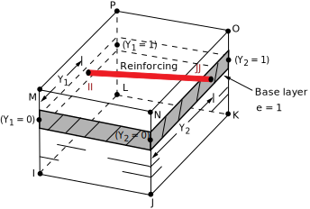
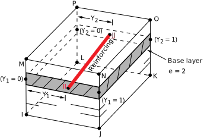
When applied to 4-node or 8-node layered shell elements:
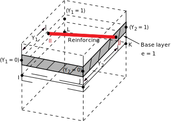
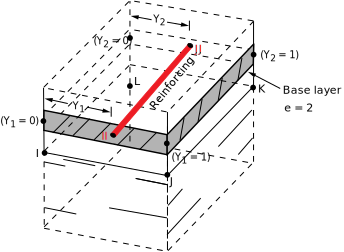
PATT: EDGO
Description: The orientation of the discrete reinforcing fiber is similar to one of the specified element edges. The fiber orientation can be further adjusted via offsets with respect to the specified element edge.
Required input:
V1 (or O) -- The number to indicate the element edge to which the offsets
are measured. The default value is 1. |
V2 and V3 (or Y1 and Z1) -- The normalized distances from the fiber to the first end of
the specified element edge. Valid values for Y1 and Z1 are 0.0 through 1.0. The default
value for Y1 and Z1 is 0.5. |
V4 and V5 (or Y2 and Z2) – The normalized distances from the fiber to the second end
of the specified element edge. Value values for Y2 and Z2 are 0.0 through 1.0. The default
value for Y2 is Y1, and the default value for Z2 is Z1. |
If the base element is a beam or link, the program ignores values
V2throughV5and instead places the reinforcing in the center of the beam or link.
When applied to 8-node or 20-node solid elements:
When applied to tetrahedral elements:
|
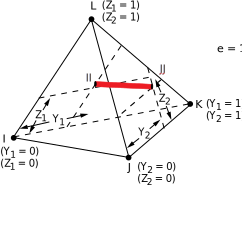
| |
|
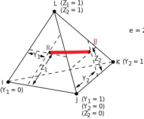
| |
|
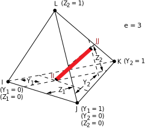
|
When applied to 3-D shell elements:
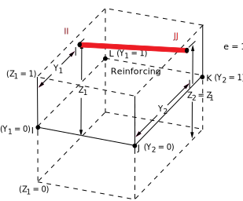
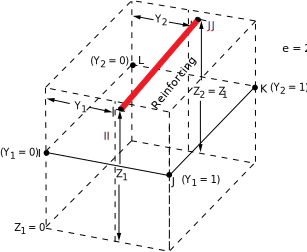
When applied to beam or link elements:
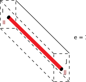
PATT: BEAM
Description: Use this specialized input pattern for defining reinforcing in regular constant and tapered beams.
Required input:
V1 and V2 (or
Y1 and Z1) -- Y and Z offsets with
respect to the section origin in the first beam section referenced by the base beam element.
The default value for Y1 and Z1 is 0.0. |
V3 and V4 (or
Y2 and Z2) -- Y and Z offsets with
respect to the section origin in the second beam section referenced by the base beam element.
The default value for Y2 is Y1, and the
default value for Z2 is Z1. (Because
V3 and V4 values apply only to tapered
beams, the program ignores them if the base beam has a constant section.) |
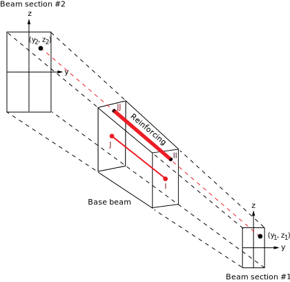
- - - - - - - - - - - - - - - - - - - - -
Type: REINF, Subtype: SMEAR
Suitable for layers of reinforcing fibers with uniform cross-section area and spacing. Each SECDATA command defines the one reinforcing layer in the section. When referenced by a MESH200 element, only one SECDATA command per section is allowed. When referenced by reinforcing elements (REINF263 and REINF265), this limitation does not apply.
| Data to provide in the value fields: |
MAT, A, S, KCN, THETA, PATT, V1, V2, V3, V4,
V5
|
| where |
MAT = Material ID for layer. (See REINF263
or REINF265 for available material models.) When the section is
referenced by a MESH200 element, the default is the
MESH200 element material ID (MAT). When the
section is referenced by reinforcing elements, the material ID is required for all fibers, and
no default for this value is available. |
A = Cross-section area of a single
reinforcing fiber. |
S = Distance between two adjacent
reinforcing fibers. |
KCN = Local coordinate system reference number for this layer. (See
LOCAL for more information.) When the section is referenced by a
MESH200 element, the default KCN value is
the MESH200 element coordinate system ID (ESYS).
For the 2-D smeared reinforcing element REINF263,
KCN input is not required. When KCN is
not specified, the program uses a default layer coordinate system (described in
REINF263 and REINF265). |
THETA = Angle (in degrees) of
the final layer coordinate system with respect to the default layer
system or the layer system specified in the KCN field. This value is ignored for REINF263 when that element is embedded in 2-D plane strain or plane stress
base elements. |
PATT = Input pattern code (described below) indicating how the
location of this fiber is defined. Available input patterns are MESH (when the section is
referenced by a MESH200 element), and LAYN, EDGO, and BEAM (when the
section is referenced by a reinforcing element). |
V1, V2, V3, V4, V5 = Values to
define the location of the reinforcing layer, as shown: |
PATT: MESH
Description: The locations of reinforcing fibers are defined directly via MESH200 element connectivity.
Required input: None.
PATT: LAYN
Description: The smeared reinforcing layer is placed in the middle of a layer in a layered base element.
Required input: V1 (or n) -- The number
of the layer in the base element on which to apply the reinforcing
layer. The default value is 1.
|
When applied to layered solid elements: 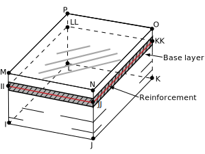
| |
|
When applied to 2-D axisymmetric shells: 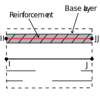
|
When applied to 3-D layered shells: 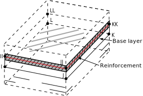
|
PATT: EDGO
Description: This pattern applies only to 2-D smeared reinforcing element REINF263. The smeared reinforcing layer is represented by a line in 2-D. The orientation of the 2-D smeared reinforcing layer is similar to one of the specified element edges. The fiber orientation can be further adjusted via offsets with respect to the specified element edge.
Required input:
V1 (or O) -- The number to indicate the element edge to which the offsets
are measured. The default value is 1. |
V2 (or Y1) -- The normalized distances from the reinforcing layer to the first
end of the specified element edge. Valid values for Y1 are 0.0 through
1.0. The default value for Y1 is 0.5. V3 (or Z1) input is ignored. |
V4 (or Y2) -- The normalized distances from the reinforcing layer to the second
end of the specified element edge. Valid value values for Y2 are 0.0 through 1.0. The default value for Y2 is Y1. V4 (or Y2) is ignored for axisymmetric shell
elements. V5 (or Z2`) input is ignored. |
|
When applied to 2-D 4-node or 8-node solid elements: 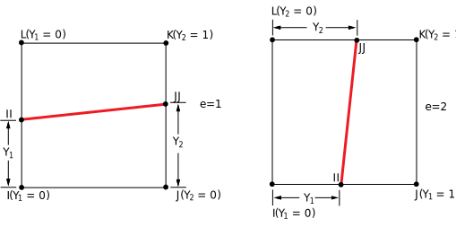
| |
|
When applied to 2-D 3-node or 6-node triangular solid elements: 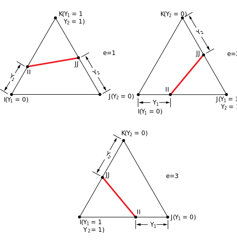
| |
|
When applied to 2-node or 3-node axisymmetric shell elements: |
PATT: ELEF
Description: The smeared reinforcing layer is oriented parallel to one of three adjacent element faces. (This pattern does not apply to 2-D smeared reinforcing element REINF263.)
Required input:
V1 (or F) -- The number to indicate the base element face. The default value
is 1. |
V2 (or d1) -- The normalized distance from the layer to the specified base
element face. Valid values for d1 are 0.0
through 1.0. The default value is 0.5. |
V3 (or d2) -- The normalized distance from corners JJ and KK of the layer
to the specified base element face (applicable to 8-node or 20-node
solid elements only). Valid values for d2 are 0.0 through 1.0. The default value is d1. |
When applied to 8-node or 20-node solid elements:
|
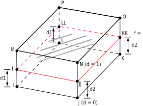
|
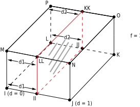
| ||
|
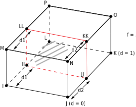
|
where
|
When applied to tetrahedral elements:
|
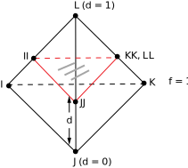
|
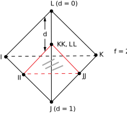
|
|
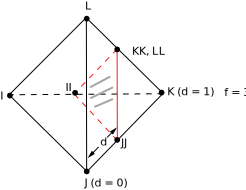
|
When applied to 3-D shell elements:
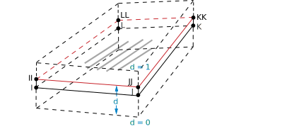
CONTACT
Type: CONTACT
Geometry Correction Contact sections for geometry
correction (Subtype = CIRCLE, SPHERE, or
CYLINDER) are referenced by the following elements: TARGE169, TARGE170, CONTA171, CONTA172, CONTA173, and CONTA174. This geometry correction
applies to cases where the original meshes of contact elements or
target elements are located on a portion of a circular, spherical,
or revolute surface.
Type: CONTACT, Subtype: CIRCLE
Data to provide in the value fields for Subtype = CIRCLE: |
X0, Y0 (circle center location in Global Cartesian coordinates - XY plane) |
Type: CONTACT, Subtype: SPHERE
Data to provide in the value fields for Subtype = SPHERE: |
X0, Y0, Z0 (sphere center location in Global
Cartesian coordinates) |
Type: CONTACT, Subtype: CYLINDER
Data to provide in the value fields for Subtype = CYLINDER: |
X1, Y1, Z1, X2, Y2, Z2 (two ends of cylindrical
axis in Global Cartesian coordinates) |
User-Defined Contact Surface Normal The contact
section for a user-defined contact surface normal (Subtype = NORMAL) is referenced by the following elements: CONTA171, CONTA172, CONTA173, CONTA174, and CONTA175. This geometry correction is used to define a shift direction for
interference fit solutions.
Type: CONTACT, Subtype: NORMAL
Data to provide in the value fields for Subtype = NORMAL: |
CSYS, NX, NY, NZ
|
| where |
CSYS = Local coordinate system
number (defaults to global Cartesian). |
NX, NY, NZ = Direction cosines with respect
to CSYS.
|
Radius values associated with contact or target elements The radius contact section (Subtype = RADIUS) is referenced by contact or target elements in a general
contact definition under the following circumstances:
Equivalent 3-D contact radius for beam-to-beam contact - The contact section for a user-defined equivalent contact radius (
Subtype= RADIUS) is referenced by the element type CONTA177 within a general contact definition. 3-D beam-to-beam contact (or edge-to-edge contact) modeled by this line contact element assumes that its surface is a cylindrical surface.Radius (or radii) of rigid target segments - The contact section for rigid target segment radii is referenced by target elements TARGE169 (circle segment type) and TARGE170 (line, parabola, cylinder, sphere, or cone segment type) in a general contact definition.
Type: CONTACT, Subtype: RADIUS
Data to provide in the value fields for Subtype = RADIUS if
the section is used as an equivalent contact radius for 3-D beam-to-beam contact: |
VAL1 = Equivalent radius - outer radius |
VAL2 = Equivalent radius - inner radius (internal beam-to-beam
contact) |
VAL3: Set to 1 for internal beam-to-beam contact. Defaults to
external beam-to-beam contact. |
Data to provide in the value fields for Subtype = RADIUS if the section is used for 2-D or 3-D rigid target segments: |
VAL1 = First radius of the target
segment (used for circle, line, parabola, cylinder, sphere, and cone
segment types) |
VAL2 = Second radius of the target
segment (used only for the cone segment type) |
Simplified Bolt Thread Modeling The contact section
for bolt-thread modeling (Subtype = BOLT)
is referenced by the following elements: CONTA171, CONTA172, CONTA173, CONTA174, and CONTA175. It applies to cases where the original meshes of contact elements
are located on a portion of a bolt-thread surface. This feature allows
you to include the behavior of bolt threads without having to add
the geometric detail of the threads. Calculations are performed internally
to approximate the behavior of the bolt-thread connections.
Type: CONTACT, Subtype: BOLT
Data to provide in the value fields for Subtype = BOLT: |
Dm
, P, ALPHA, N, X1, Y1, Z1, X2, Y2, Z2
|
| where |
Dm
= Mean
pitch diameter, dm. |
P = Pitch distance, p. |
ALPHA = Half-thread angle, α (defaults to 30 degrees). |
N = Number of starts (defaults
to 1). |
X1, Y1, Z1, X2, Y2, Z2 = Two end points
of the bolt axis in global Cartesian coordinates. |